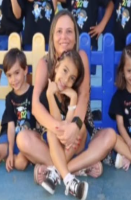
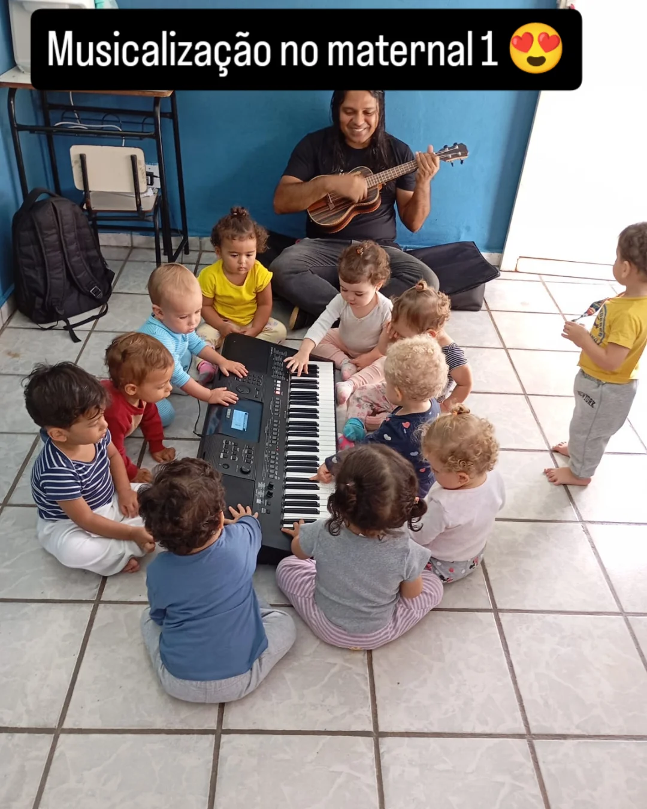
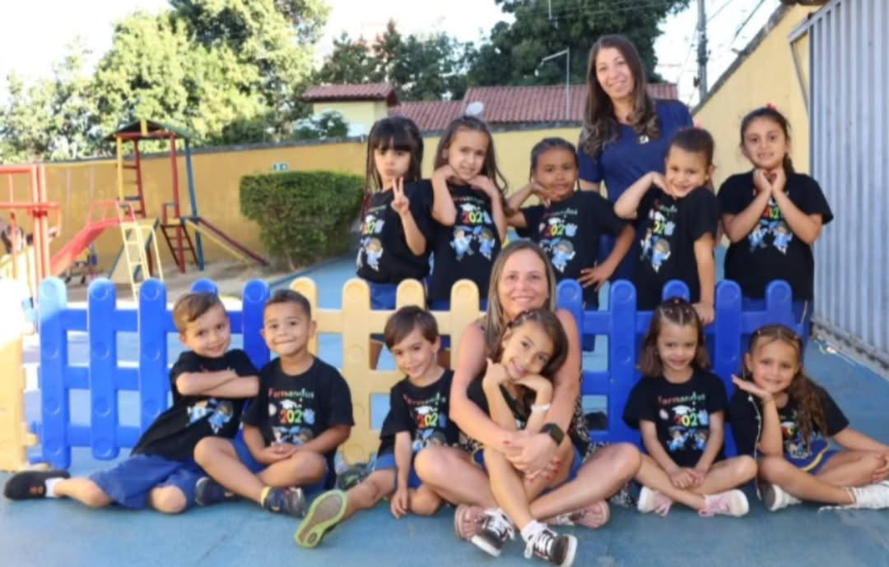

NOSSA ESCOLA
Proprietária da Emília Ferreiro:
Priscila Machado do Vale, Pós-Graduada em NeuroPsicopedagogia pela UFMG.
Apaixonada por educação infantil, trabalha nesta área desde jovem.
Em 2018 resolveu trazer a educação verdadeira para a cidade, e há mais de 7 anos foi a responsável por educar excelentes crianças em Lagoa Santa usando a Neurociência.
Priscila Machado do Vale, Pós-Graduada em NeuroPsicopedagogia pela UFMG.
Apaixonada por educação infantil, trabalha nesta área desde jovem.
Em 2018 resolveu trazer a educação verdadeira para a cidade, e há mais de 7 anos foi a responsável por educar excelentes crianças em Lagoa Santa usando a Neurociência.

BILÍNGUE
Na Emília Ferreiro, seu pequeno aprende inglês de forma natural e divertida, preparando-o para o mundo. Com aulas adaptadas para cada idade, estimulamos o desenvolvimento desde o primeiro dia.
Invista no melhor começo para seu filho.
Invista no melhor começo para seu filho.
CROSS KIDS
Na Emília Ferreiro, com o programa Cross Kids, as crianças exercitam o corpo de forma segura e alegre, melhorando coordenação motora, equilíbrio e saúde desde cedo. Um jeito ativo de aprender brincando!
Dê ao seu pequeno o presente de um corpo saudável e cheio de energia.
Dê ao seu pequeno o presente de um corpo saudável e cheio de energia.
MUSICALIZAÇÃO
Desperte o talento musical do seu filho desde cedo!
Na nossa creche, a musicalização é importante: o professor toca, as crianças exploram instrumentos, cantam e desenvolvem ritmo, criatividade e sensibilidade. Um ambiente onde a música transforma o aprendizado em diversão.
Estimule o desenvolvimento completo do seu pequeno com som e alegria.
Na nossa creche, a musicalização é importante: o professor toca, as crianças exploram instrumentos, cantam e desenvolvem ritmo, criatividade e sensibilidade. Um ambiente onde a música transforma o aprendizado em diversão.
Estimule o desenvolvimento completo do seu pequeno com som e alegria.

E MUITO MAIS PARA SEU FILHO!
Marque uma visita!
Certifique-se de que o seu filho está se desenvolvendo corretamente.
Com profissionais que seguem a NeuroCiência, sabem ensinar seu filho a se desenvolver didaticamente, enquanto se diverte com aulas de Musicalização, CrossKids, Inglês e Mais!
Certifique-se de que o seu filho está se desenvolvendo corretamente.
Com profissionais que seguem a NeuroCiência, sabem ensinar seu filho a se desenvolver didaticamente, enquanto se diverte com aulas de Musicalização, CrossKids, Inglês e Mais!
